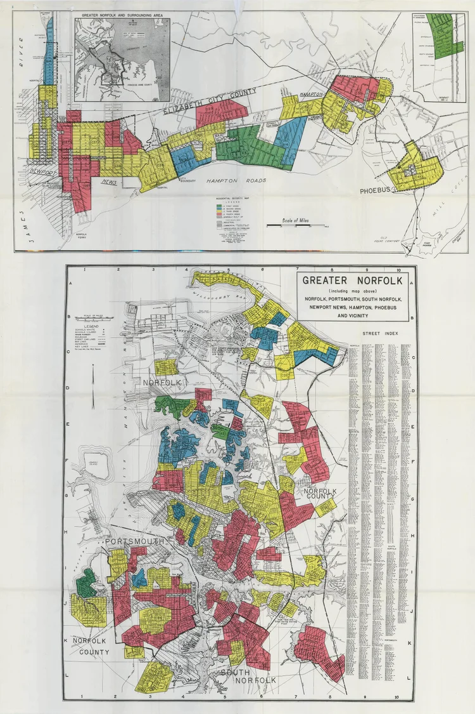
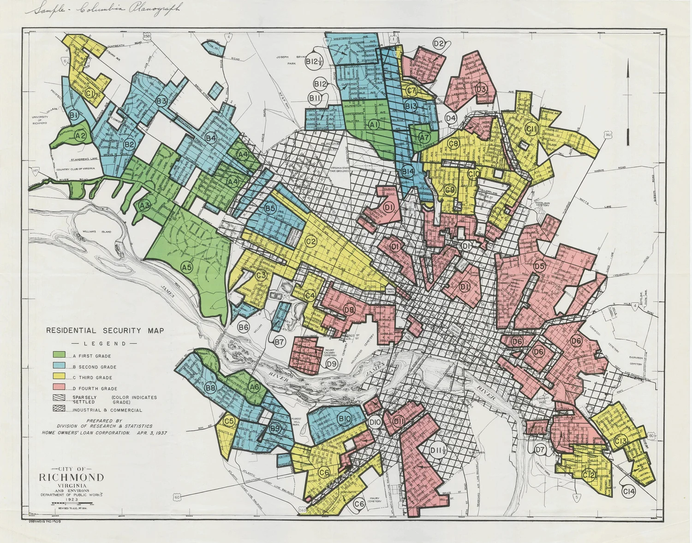
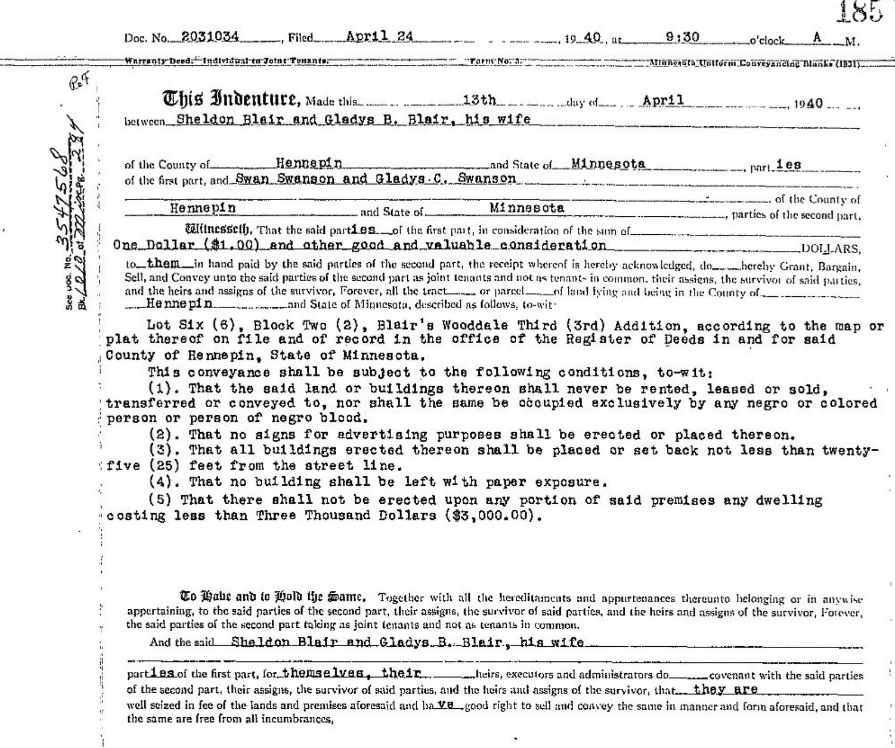
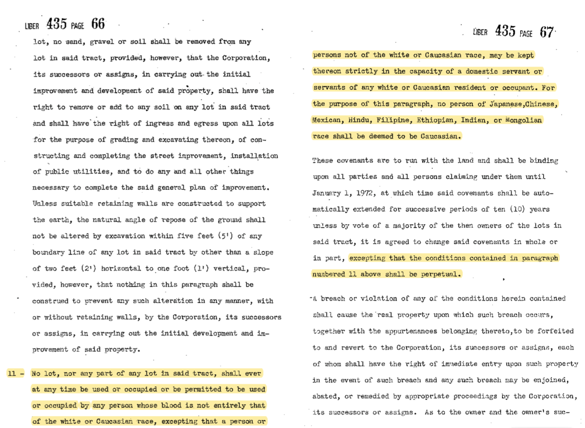
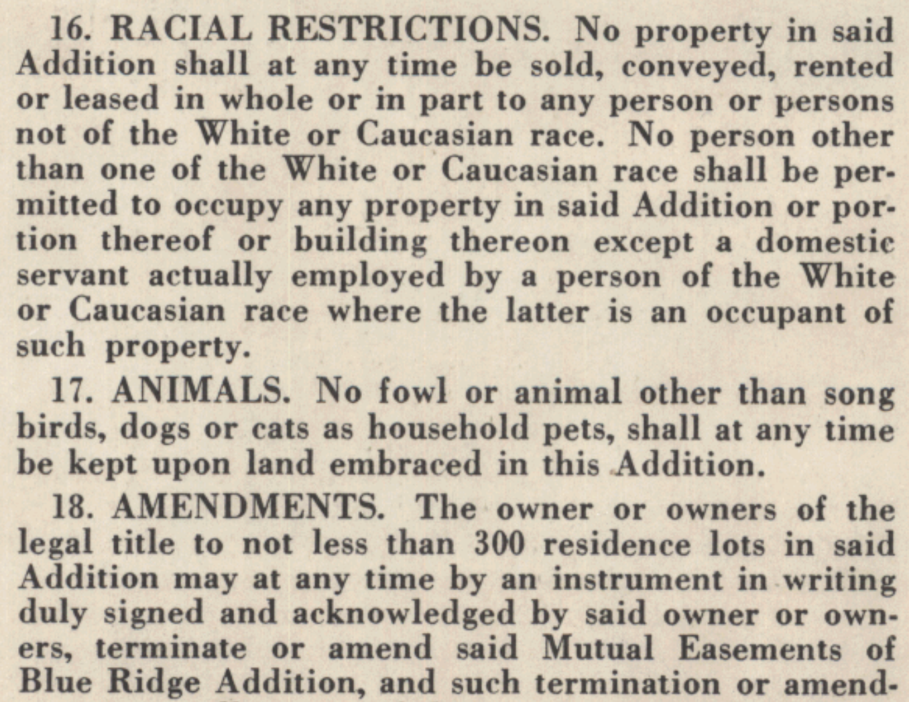
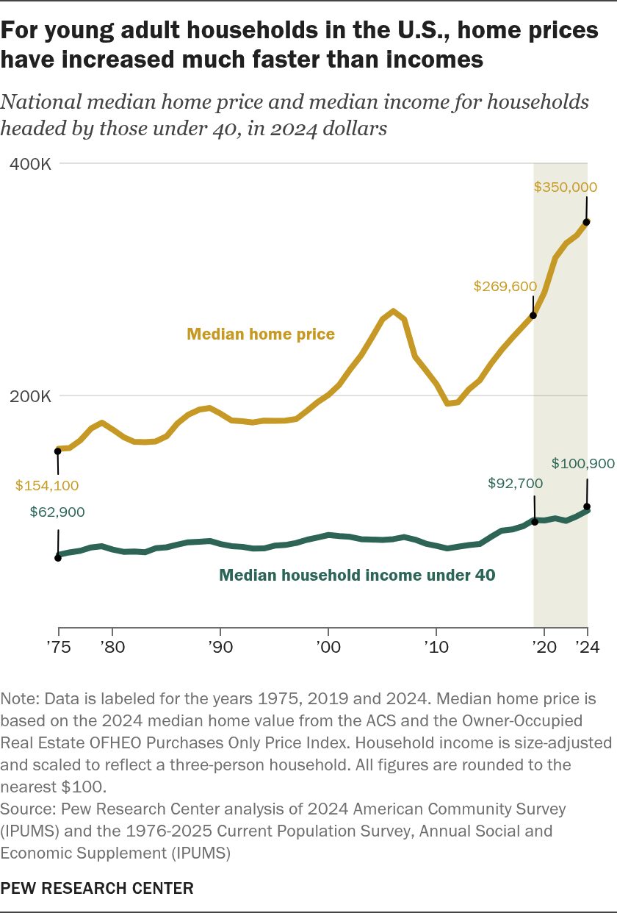

Why the Gap Exists
The housing crisis in Virginia is deeply rooted in systematic disparities among race and age. When these two factors collide, they create a compounding disadvantage that locks younger residents and communities of color out of homeownership.
What do you mean by that?
Disclaimer: The following information is based on historical research and should not be interpreted as an endorsement of any particular viewpoint. The cohesive list does not include every cause of "The Gap."
Redlining
In 1930, the federal Home Owners' Loan Corporation (HOLC) drew color-coded maps drew color-coded maps of more than 200 American cities to identify mortgage lending risk.
"A" areas were marked green, meaning low risk.
"B" areas were marked blue, meaning not ideal but alright
"C" areas were marked yellow, which the HOLC considered a "transition" area that is declining in terms of "age, obsolecence, and change of style" and "infiltration of a lower grade population" (Mapping Inequality, University of Richmond)
"D" areas were marked red, meaning the highest risk. These areas were often home to Black communities, and the practice of "redlining" denied them access to mortgages and homeownership.

https://www.livingtogetherlivingapart.com/

https://dsl.richmond.edu/redliningrichmond/
Racially Restrictive Covenants: Legalized Discrimination
Restrictions on who could buy property were legally embedded into deeds. These covenants explicitly prohibited the property from being sold to a speccific group of people, including black people.
Even if the person that wanted to buy it was qualified and had the money for it, they cannot buy it if the covenants said that their race is legally not allowed to buy it.

https://www.nationalcovenantsresearchcoalition.com/whatisacovenant

https://www.nationalcovenantsresearchcoalition.com/whatisacovenant

https://www.nationalcovenantsresearchcoalition.com/whatisacovenant
Kimbal & Richards "Land Merchants" https://www.flickr.com/photos/elycefeliz/6751042001
Income and Inflation
The income of younger generations cannot catch up with the increase of housing costs. It is almost Mathematically impossible to "just buy a house" out of pocket for many young adults who have this circumstance.
For young adult households in the U.S., home prices have increased much faster than incomes (Pew Research Center)
